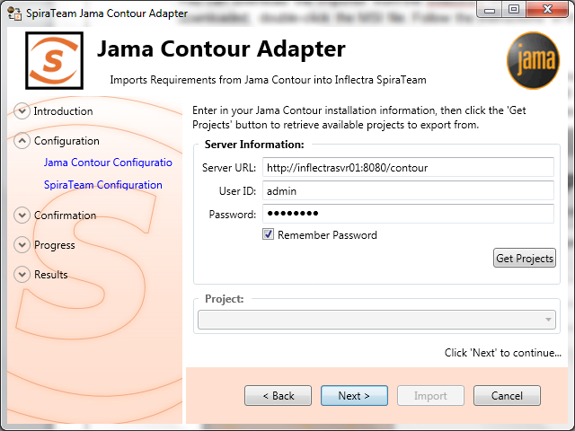
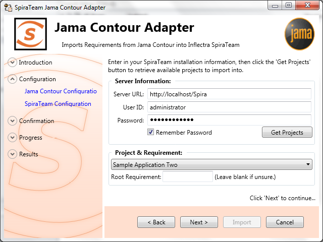
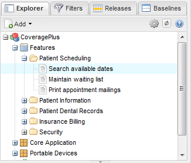
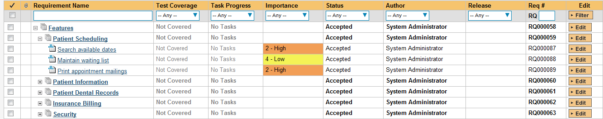
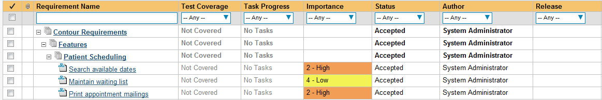
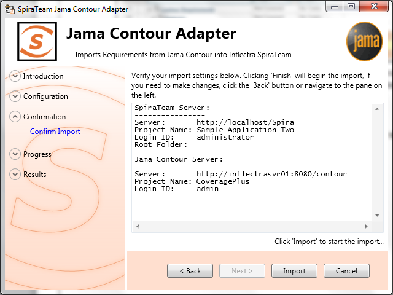
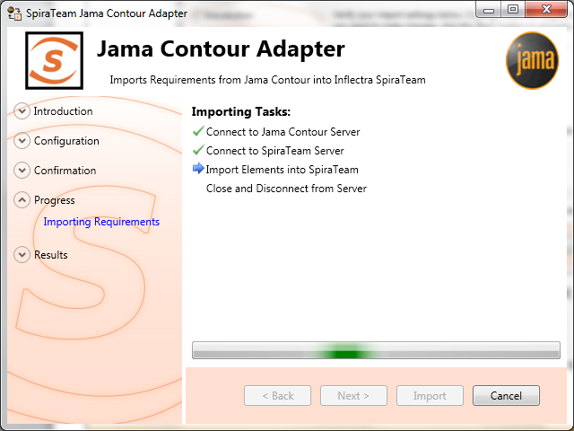
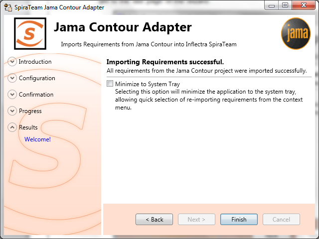

Importing From Jama Contour
This section outlines how to use the included Importer for importing Requirements, Features, and Use Cases from projects residing in Jama Contour™ projects into equivalent projects in SpiraTest®, SpiraPlan® or SpiraTeam® (hereafter referred to as SpiraTeam).
Installing the Importer
This section outlines how to install the importer onto a workstation so that you can then import requirements and use cases from Contour into SpiraTeam. It assumes that you already have a working installation of SpiraTeam v3.0 or later and a working installation of Jama Contour.
You can download the Importer from the Inflectra's website under "Downloads and Add-Ons". When downloaded, double-click the MSI file. Follow the instructions in the MSI file to install the importer.
Importing from a Contour Project
Now that you have installed the integration adapter, you can launch it at any time by going to Start > Programs > SpiraTest > Tools > Jama Contour Adapter. This will launch the import application itself. You will be shown an introduction screen. Click 'Next' to get to the second screen:

You need to enter the Contour Server URL (including the port number if appropriate), the username and password you use to log onto the system, then click the Get Projects button. The program will connect to the server and get a list of all available projects. Select the project you want to import into under the Project section. Once the project is selected, click Next to continue to the screen where you enter your SpiraTeam server and project information:

On this screen, you need to enter the SpiraTeam Server URL, the username and password you use to log onto the system, then click the Get Projects button. The program will connect to the server and get a list of all available projects. Select the project you want to import into under the Project & Requirement section.
The Root Requirement box is for specifying a base requirement to load all the Contour elements into. If left blank, then the root folders in the Contour's explorer will be root requirement folders in the SpiraTeam Project.
For example, if your Jama Contour project has a tree that looks like:

Then the requirements imported into SpiraTeam will appear like:

Note: At this time, change request and defect items are not imported from Contour projects.
If you have a requirement already in SpiraTeam, and want the Contour requirements to appear inside it, then you need to enter the requirement number into the Root Requirement text box. For example, if you have a requirement named "Contour Requirements" with a number of RQ1920, then put 1920 into the Root Requirement field and run the import. When import is finished, the SpiraTeam requirement tree will look like:

Once the fields have been populated, click Next to get to the summary screen.

The summary screen tells you what will actions will be performed, and once you have verified the information, click the Import button to start the import:

Anything flagged with a red

failed, green

means that they succeeded. Once finished, click Finish to get to the last page of the wizard:

If the Minimize to System Tray option is selected, when you click Finish or exit the from the application, it will minimize to the system tray. Once in the system tray, you can right-click on the icon and the it will give you the option to either re-import from the same project or select another project for a fresh import. If the option is not selected, the program will exit, and you can re-launch the importer to import from the same or another Contour project.
Using the System Tray Shortcut Menu
When the application is minimized to the system tray, there are several shortcuts available:
-
Double-Clicking the icon will bring the importer back to the first screen, allowing you to import another Contour project.
-
Right-clicking will give a shortcut menu with the following options:
-
Exit -- Close the program entirely.
-
Rerun Import -- Will provide you the screen to re-launch the last import you just ran.
-
Show Window -- Same as double-clicking on the icon, will bring the wizard back to the first screen, allowing new input options to be set.
Jama Contour & SpiraTeam Importing Notes
At this time, only requirements are imported into SpiraTeam from Contour. All the various types in Contour are imported as Requirements into SpiraTeam. In addition, the following fields are brought over into SpiraTeam from Contour according to the following mapping table:
| Jama Contour Field | SpiraTeam Field |
|---|---|
| Name | Name |
| Description | Description (with HTML) |
| Priority | Importance: Contour Value : SpiraTeam Value High : High Medium : Medium Low : Low |
| Status | Status: Contour Value : SpiraTeam Value Draft : Requested Approved : Accepted Completed : Completed Rejected : Rejected (None) : Requested |
| Author (not transferred, always set to user who ran the import last) | |
| Release | Release / Iteration |
| Owner (not transferred) | |
| Planned Effort (not transferred) | |
| Item Type | Custom Text Property #1 |
| Document Key | Custom Text Property #2 |
| Item Type Category | Custom Text Property #3 |
Using this adapter, you can manage the appropriate artifacts in Contour and then periodically re-run the import application to update SpiraTeam. The application will remember that the project was already used for an initial load and will simply update the requirements as appropriate as well as add any additional ones added. If you are using SpiraTeam v3.1 or later, the update process will also delete any artifacts removed in Contour.
Note that any changes to the requirement hierarchy in Contour are not reflected. This allows you to change the organization of the artifacts in SpiraTeam to make them easier to use without the changes being overwritten on the next import cycle.
Finally, should you want to start again and re-import a project from scratch that has already been imported once before, you may do so by re-running the Importer, and entering in -1 as the Root Requirement. This will not delete requirements from SpiraTeam, only remove mappings, so the next time you run the importer on this file, all new requirements will be created.
Note: This option is irreversible and should be performed with care.